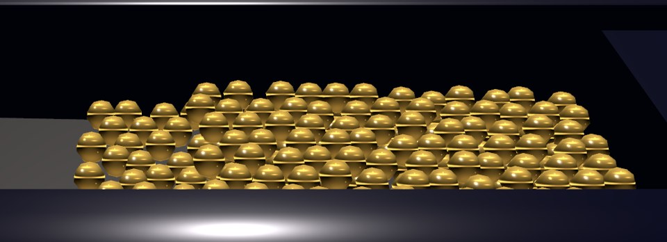
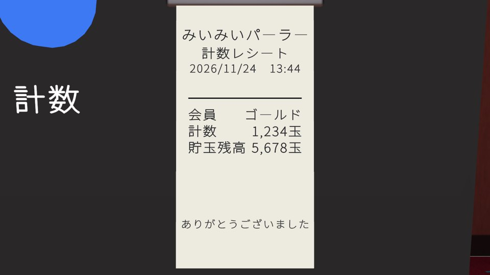
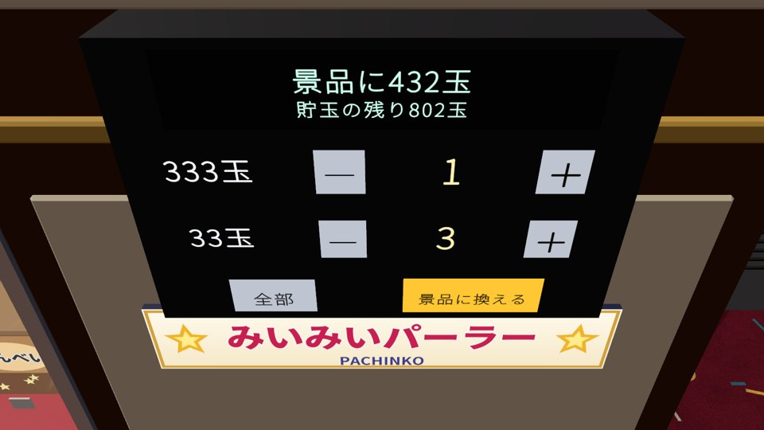
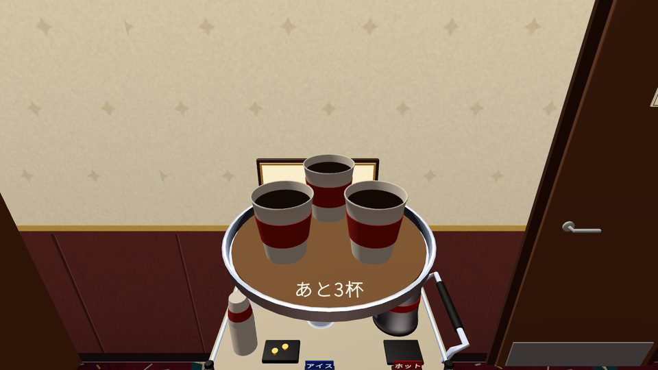
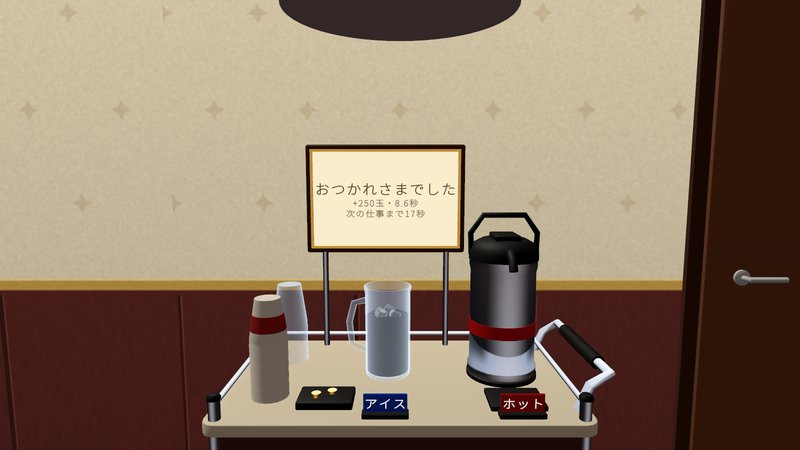
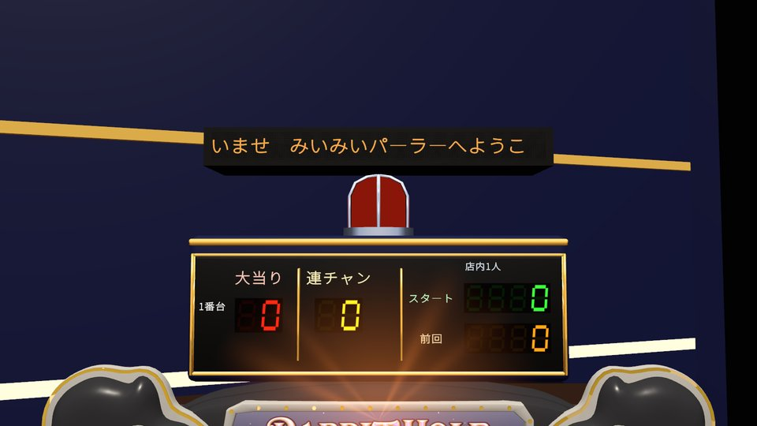

最後更新：2026-11-26（週四）
店內玩法
店內地圖

| 位置 | 有什麼 |
|---|---|
| 中央 | 機台島（12台）。前排從西起是4台CRYSTAL、2台RABBIT HOLE，後排從東起是2台RABBIT HOLE、4台STAR PARADE |
| 進門左邊 | 獎品櫃台、香菸與飲料架、計數機（櫃台最裡面的角落）、咖啡推車（西側牆邊） |
| 進門右邊 | 你的成績畫面、排行榜（東側牆面），深處有休息區（狀況板與電視、垃圾桶） |
| 通道上方 | 電子看板 |
| 店外 | 神秘古董商「Hoshino Shokai」（出生點左邊，停車場角落的小屋） |
選機台
- 在空機台按打つ（發射，把手或サンド（借珠機）上的紅色按鈕）、玉を借りる（借鋼珠）、貯玉から出す（領出存珠）其中一個就能佔台。打開了入口椅子に座る（坐椅子）牌子的人，坐上機台的椅子也能佔台
- 只要有鋼珠就會自動發射。力道也是自動的（最容易轉的力道）
- PUSH要按出現在點陣顯示前面的按鈕
- 珠箱裡的鋼珠只要打就會自動回到上盤
離開座位時
- 站著打的時候，離機台座位的位置2.2m就算不玩了，會停止發射。坐在椅子上的時候，是離開椅子時
- 離開後，只要機台裡還有鋼珠，或保留、旋轉中、大當、確變、時短、RUSH還沒結束，就一直保留。沒有鋼珠、也玩完以後5分鐘變成空台
- 保留中的機台對別人顯示使用中（使用中），佔不了，也坐不了椅子
- 佔了別的機台，之前保留的機台就會解開，那台的鋼珠會進入存珠
- 在計數機計數後，沒在玩的機台會變成空台
- 離開世界後機台馬上變成空台。機台裡的鋼珠會在下次來的時候進入存珠
- 兩個人幾乎同時佔同一台時，歸先佔的人。後佔的人會被移出，手上那台的鋼珠進入存珠
鋼珠與存珠
| 借鋼珠 | 500Mi換125顆（1顆4Mi） |
|---|---|
| 領出存珠 | 每次125顆 |
| 上盤 | 最多250顆。滿出來會流到下盤 |
| 下盤 | 最多500顆。滿了會顯示「玉を抜いてください」（請把鋼珠取出）。10秒內沒取出，就會自動抽珠（下盤→珠箱） |
| 珠箱 | 最多1,000顆。裝滿後會被堆起來（10層一堆，共6堆，最多60箱） |
※等待抽珠時，放不進下盤的鋼珠會灑到地上（最多100顆）。地上的鋼珠用「こぼれた玉を拾う」（撿起灑出的鋼珠）撿起，會進到撿起的人的存珠。誰都可以撿。

計數、獎品
- 按計數機的計数（計數），把機台的鋼珠數完存進存珠。珠箱會在計數機上傾倒，鋼珠流進去。數完會出一張收據（可以拿在手上）
- 在獎品櫃檯前的操作盤，把存珠換成獎品。用－和＋選擇大獎品（深藍盒）和小獎品（紅盒）的數量，再按景品に換える（換成獎品）。全部（全部）會換到能換的上限
換一個獎品需要的鋼珠數，會隨會員等級變化。
| 會員等級 | 大獎品 | 小獎品 | 每顆 |
|---|---|---|---|
| White | 333顆 | 33顆 | 3Mi |
| Blue | 313顆 | 31顆 | 3.2Mi |
| Green | 294顆 | 29顆 | 3.4Mi |
| Red | 270顆 | 27顆 | 3.7Mi |
| Gold | 250顆 | 25顆 | 4Mi |
※到Gold才是等價（1顆4Mi，和借鋼珠的價格一樣）。




神秘古董商（Hoshino Shokai）

店外，出生點左邊的小屋。按小窗口的景品を出す（拿出獎品），手上的獎品就會換成Mi。
大獎品1,000Mi，小獎品100Mi，不分等級都一樣。
賺錢
第一次來時持有Mi是5,000Mi。持有Mi、存珠、獎品下次來也會保留。
| 方法 | 獲得 | 備註 |
|---|---|---|
| 咖啡店員 | 3杯得存珠250顆 | 可以不休息一直做 |
| 撿垃圾 | 空罐和菸蒂每個都是10顆（存珠） | 附帶出珠提升2分鐘 |
| 撿珠 | 每6秒1顆（1分鐘10顆，存珠） | 在休息區長椅上方的牌子開始。離開休息區，或再按一次就會停止 |
| 今日任務 | 存珠50〜125顆（每週任務是375〜625顆） | 每天3個、每週1個 |
咖啡店員

- 在咖啡推車的立牌按売り子を始める（開始當店員）。托盤會出現在手上（VR是左手，桌面版在畫面下方）
- 機台上方會立起訂單牌。紅牌是熱咖啡，藍牌是冰咖啡
- 用推車上的壺裝熱咖啡、用水壺裝冰咖啡放進托盤（最多3杯）
- 按訂單牌把咖啡交出去。交完3杯就有250顆存珠



撿垃圾
- 地上的垃圾每25〜50秒會出現在機台周圍（最多6個）


今日任務

每天3個、每週1個，從下面這些裡面出。
- 轉動機台100次
- 中1次大當
- 用計數機數鋼珠
- 把鋼珠換成獎品
- 把獎品拿去給神秘古董商
- 送1杯咖啡
- 丟3個空罐
- 抽1根菸
香菸、飲料
用存珠換來在機台上使用，就會附帶出珠提升。條狀起司「Hoshizora Cheese」的待遇和香菸一樣。
| 香菸 | Hoshizora Cheese | 飲料 | |
|---|---|---|---|
| 價格 | 存珠70顆換1盒20根 | 存珠70顆換1袋20根 | 存珠300顆換1箱12罐 |
| 拿出的地方 | 按機台的菸灰缸拿出1根 | 按菸灰缸前面的杯架拿出1罐 | |
| 使用 | 拿著使用會點火 | 拿著使用會剝開包裝 | 拿著使用會打開 |
| 送到嘴邊 | 抽。約10口就會燒到濾嘴附近 | 咬。約15口就吃完 | 喝。8口就空 |
| 出珠提升 | 點著火的期間 | 吃的期間 | 打開後裡面還有飲料的期間 |
| 拿著不動 | 不抽的話4分鐘燒完 | 不吃的話4分鐘消失 | 打開後4分鐘會變空 |
兌換方式與品牌
- 香菸在獎品櫃台展示櫃上方的架子。按品牌那一列就換1盒該品牌。紅色的タバコに換える（換成香菸）按鈕換的是最後換過的品牌
- Hoshizora Cheese放在香菸架和飲料層之間的盒子裡。White會員起就能換
- 飲料在同一個櫃台的飲料層。按樣品罐就換1箱該種類。層架前面會顯示箱子4秒
能換的品牌會隨會員等級增加。還不能換的商品附有「ブルー会員から」（Blue會員起）之類的牌子。
| 會員等級 | 香菸 | 飲料 |
|---|---|---|
| White | MOONRISE、CORAL | 橘子、茶 |
| Blue | MINT LEAF | 可樂 |
| Green | COMET | 汽水 |
| Red | SCARLET | 咖啡 |
| Gold | AURUM | 奶茶 |

拿出來的方式
- 按菸灰缸會從手上拿出1根，放在菸灰缸的凹槽。菸灰缸最多只能放1根
- 按杯架會從手上拿出1罐立在上面。杯架上有罐子時就拿不出來
使用方式
| VR | 桌面版 | |
|---|---|---|
| 抽菸 | 把濾嘴靠到離嘴5.5cm以內 | 拿著使用就會送到嘴邊 |
| 菸灰 | 火頭外側的菸灰會變長，到1.6cm就掉落。VR可以用使用鍵彈掉 | |
| 喝飲料 | 把罐口靠到離嘴8cm以內並傾斜。滿罐是25°，越接近空的就要傾得越深，最多70° | 拿著使用會從下方送到嘴角右邊（每口1秒） |
| 吃起司 | 拿法和送到嘴邊的方式與香菸相同。送到嘴邊就會咬一口變短 | |


放置後多久消失
| 狀態 | 消失所需時間 |
|---|---|
| 把點著火的香菸放在菸灰缸 | 90秒後火熄滅，菸蒂再過25秒消失 |
| 不點火直接放在菸灰缸 | 2分鐘 |
| 把香菸掉在地上等地方 | 90秒後火熄滅，掉落後5分鐘消失 |
| 把起司放著不管 | 90秒 |
| 打開的罐子 | 即使不喝，4分鐘後也會變空 |
| 把空罐放在杯架 | 20秒（按杯架會收掉並拿出下一罐） |
| 把空罐放在地上等地方 | 5分鐘 |
| 放置沒開的罐子 | 在杯架上是10分鐘，其他地方是3分鐘。之後會回到拿出的人手上 |
效果
不管是拿在手上，還是放在菸灰缸或杯架上，大獎口每1個計數的賞球都會+1（出珠提升）。越上面的品牌，抽完、喝完之後出珠提升殘留的時間越長。
| 品牌等級 | 結束後殘留的時間 |
|---|---|
| White（Hoshizora Cheese也是） | 0秒 |
| Blue | 30秒 |
| Green | 60秒 |
| Red | 90秒 |
| Gold | 120秒 |
請客
- 把飲料或香菸放到別人正在玩的機台的杯架或菸灰缸，就是請客。起司也一樣
- 送的人和收的人都會獲得出珠提升2分鐘（連續進行最多累積到10分鐘）
- 效果上，送的人每20秒最多1次，收的人每10秒最多1次
丟垃圾的方式
- 空罐和菸蒂要在休息區垃圾桶的洞口上方放手。離洞中心橫向26cm以內、從洞下方35cm到上方1m的範圍都能丟進去。放在蓋子上的東西也算丟掉
- 不管是誰的、還是自己的，每個都能得10顆存珠，並獲得出珠提升2分鐘（連續進行最多累積到10分鐘）
- 連續領取時要間隔6秒。還有飲料的罐子、沒開的罐子、點著火的香菸不會得到鋼珠
小情報
- 用起司盒牌子上的「灰皿で出す物」（放進菸灰缸的東西）可以在香菸和起司之間切換。手上拿著的東西也會一起換
- 會員等級提升後，手邊較低等級的香菸和飲料會一次換成目前等級的品牌（起司不變）
- 按起司盒前面的牌子「ほかの人のタバコをチーズに見せる」（把別人的香菸看成起司）可切換開關。開啟期間，別人的香菸和菸蒂會變成起司的形狀，看不到火、煙、菸灰。只有自己的畫面會變
- 拿在手上的東西不會被別人拿走。放下的東西則可以被拿走

出珠提升、玄學
出珠提升
大獎口每1個計數的賞球+1。
※本頁的時間是White會員的時長。會員等級越高越長（Blue×1.1、Green×1.2、Red×1.35、Gold×1.5）。玄學的一口菸、隔壁大當、剛借珠的時間也一樣。
| 生效時機 | 持續時間 |
|---|---|
| 拿著或放著打開的飲料 | 那段期間 |
| 拿著或放著點著火的香菸 | 那段期間 |
| 丟1個垃圾 | 2分鐘（連續進行最多累積到10分鐘） |
| 請客或被請客 | 2分鐘（連續進行最多累積到10分鐘） |
玄學
只限通常時自己的機台，大當機率會稍微上升。合計最多1.3倍。不會有演出。
| 名稱 | 條件 | 中獎機率倍率 |
|---|---|---|
| 一口菸 | 點著香菸後2分鐘 | ×1.08 |
| 回台 | 離開保留的機台20秒以上再回來後的5個保留 | ×1.10 |
| 隔壁大當 | 同一排隔壁機台進入大當後2分鐘 | ×1.08 |
| 剛借珠 | 借鋼珠後1分鐘 | ×1.05 |
| 罐子 | 這台機台上放著罐子（自己的罐子或別人幫你放的罐子都可以） | ×1.08 |
人數
Instance的人數越多，鋼珠越容易進啟動口（最多+15%）。
※生效中的增益會顯示在畫面左下、持有Mi的下方（例：出玉アップ 残り3:10／当たり×1.13（一服・借りたて）／回り+9%（店のにぎわい），意思是出珠提升剩3:10、一口菸和剛借珠使中獎機率×1.13、因人數使旋轉率+9%）。
會員等級
由到目前為止的最高持有Mi決定。不會降級。
| 等級 | 最高持有Mi | 每顆價值 | 鋼珠顏色 | 卡片圖案 |
|---|---|---|---|---|
| White | 0 | 3Mi | 銀 | 細斜線 |
| Blue | 50,000Mi | 3.2Mi | 藍銀 | 波浪 |
| Green | 150,000Mi | 3.4Mi | 綠銀 | 圓點 |
| Red | 400,000Mi | 3.7Mi | 紅銀 | 粗條紋 |
| Gold | 1,000,000Mi | 4Mi | 金 | 波紋與星星 |
- 獎品盒的底色和香菸、飲料的品牌也會依等級改變（品牌表）


成績、排行榜、畫面顯示
| 你的成績 | 轉動次數、大當、最高連莊、一擊、投資、回收、收支。每8秒會和今日任務交替顯示 |
|---|---|
| 排行榜 | 共6頁：本月的收支、一擊、最高連莊，以及持有Mi、歷來的一擊、最高連莊。本月的部分每月重置 |
| 電子看板 | 有人進入大當時，會跑出「〇〇さんが7番台のRABBIT HOLEで大当り」（某某在7號台的RABBIT HOLE大當）這樣的訊息 |
| 狀況板與電視 | 位於休息區。顯示12台的大當、連莊、啟動、狀態，還有依序拍攝正在玩的機台的攝影機 |
※一擊是指單次連莊中，從大獎口出來的鋼珠最高紀錄。


畫面顯示

會顯示會員卡與等級、持有Mi、存珠、機台的鋼珠。桌面版和手機在畫面左下，VR則是看左手腕就會出現。可用成績畫面下方的牌子切換顯示或隱藏。
會員卡與等級、持有Mi、持有鋼珠也會小小地顯示在頭像的頭旁邊，其他人看得到。